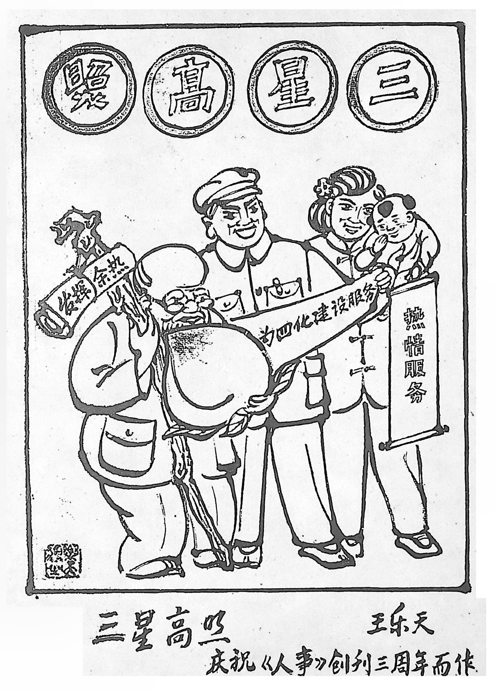

王乐天 《人事》1988年第7期（总第34期），封三
三星高照
The Three Stars Shine High
- Caption
- 庆祝《人事》创刊三周年而作
Made to celebrate the third anniversary of Renshi. - Text in the drawing
- 三星高照 / 发挥余热 / 为四化建设服务 / 热情服务
The Three Stars shine high / Give off remaining warmth / Serve the building of the Four Modernizations / Warm-hearted service - Description
- A celebratory parody of the New Year print of the Three Stars: the old Star of Longevity holds a scroll urging retirees to keep contributing, a worker in a cap carries a banner for the Four Modernizations, and a smiling woman with a child on her shoulder holds a scroll reading “warm-hearted service.”
- Note
- The Three Stars — Fortune, Prosperity and Longevity (福禄寿) — are popular New Year deities. 三星高照, “the three stars shine high,” is an auspicious greeting. Wang Letian drew the magazine's second-anniversary page in 1987 as well.
- Artist
- Wang Letian 王乐天
- Published in
- 《人事》1988年第7期（总第34期）, inside back cover
- Themes
- Anniversary drawings · Retirement

Cite
Wang Letian, “三星高照” [The Three Stars Shine High], Renshi (Personnel) 《人事》, 1988, no. 7, inside back cover.